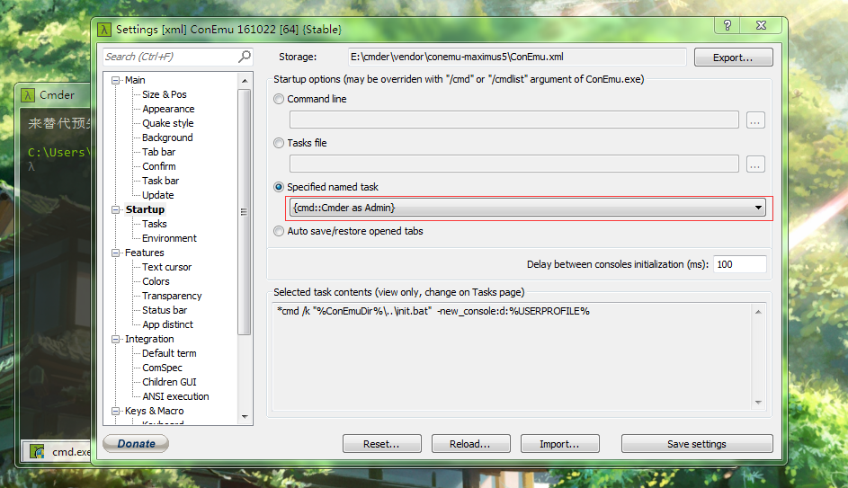
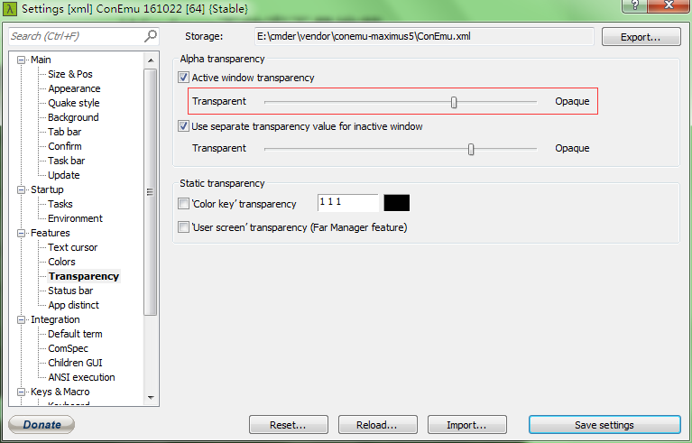
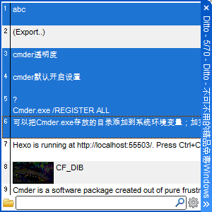
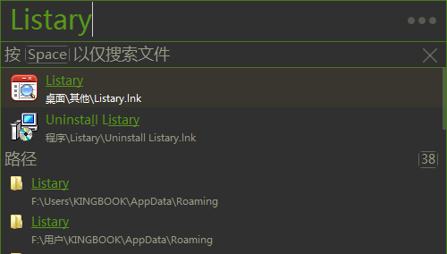
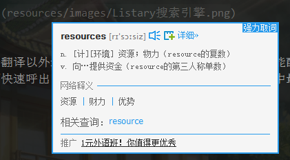
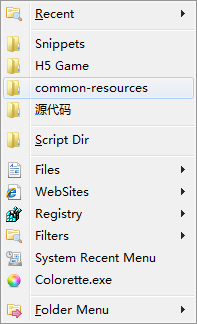
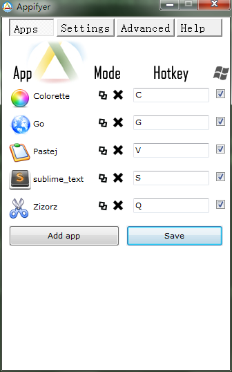

Windows下效率工具推荐
推荐一些Windows下提供效率的工具，主要有cmder（命令行增强）、Ditto（黏贴板增强）、Listary（快速启动）、AutoHotkey（一种脚本语言）的一些软件、Clover（资源管理器增强工具）、有道词典。
cmder
官方网站上对它的介绍是为Windows缺失漂亮的终端界面而设计的。
它有许多便利的设定设计，比如默认可以使用Ctrl+C进行复制、Ctrl+V进行黏贴、还可以使用底部的search框在屏幕上搜索关键字。这些便利的功能有待各位慢慢发掘，主要讲下如何更好的配置。
添加到环境变量
可以把Cmder.exe存放的目录添加到系统环境变量；使用Win+r打开运行窗口输入cmder,即可运行添加到右键菜单
用管理原的权限打开终端输入如下语句即可1
Cmder.exe /REGISTER ALL
设置默认打开的终端

如上图在设置下找到Startup，用红框标记处即为设置默认打开方式。如上图配置的是默认以管理员身份运行cmd。
- 设置透明度

如上图找到设置下的Transparency，滑动红线圈出的滑块即可改变透明度。
- 配置导入导出
在设置下任意一个子菜单中都有导入（Import..)，以及导出(Export..)
参考博文：
Win下必备神器之Cmder
Ditto
Ditto是一个剪贴板历史工具

Ditto除了可以配置快捷键记录历史的复制、剪切记录外，还能够合并黏贴条目，以及搜索历史记录，据说还能够在多台电脑间共享复制记录（不过我并没用过这功能–！）
Clover
Clover是用于给文档窗口增加多标签功能的软件，它允许用户像使用操作浏览器窗口切换的方式切换标签页Ctrl+Tab切换到下一个标签、Ctrl+Tab+Shift切换到上一个标签、双击返回到上一个页
Listary
Listary是一个能够快速查找文件并启动的一个工具，只要在工具条中输入对应的文件字符即可快速查找到文件、文件夹。

- 打开文件定位
- 快速搜索
打开设置找到关键字一栏，在右边窗口配置好关键字、URL、显示名称，即可使用关键字进行快速搜索，如下图使用了百度搜索贴吧。
有道词典
有道词典除了基本的翻译以外还具有屏幕取词、划词翻译的功能，并且能配置快捷键使得功能快速开闭、界面快速呼出。并且取词准确率算是我见过的各类产品中最高的。

AutoHotkey
AHK是一个脚本语言，能够让用户快捷或自动执行重复性的任务。使用AHK能够比较容易的制作热字串、以及热键。
使用热键win+b快速打开网站1
#b::Run https://www.baidu.com/
使用/js热字串打出javascript1
::/js::javascript:;
然而AHK本身语法异常丰富且复杂，感觉上适合写些简单的热字串、热键，但不适合开发软件。
AHK的软件推荐
不少大神使用AHK开发出了便捷软件
- Folder Menu
Folder Menu是一个快速启动的工具。它可以便捷的打开文件、文件夹、网站、注册表、也可以在打开文件时快速定位、可以在文件搜索时使用过滤器（过滤需要搜索的文件类型：程序、图片、文档等）

- Appifyer
Appifyer也是一个快速启动的工具，不过它是通过给每个文件配置快捷键的方式进行快速启动的，个人感觉用来给常用的软件设置快捷切换比较好，

它有一个超赞的小工具，屏幕取色Colorette。它使用一个十字架作为光标、使用一个小方块来显示当前的颜色，右击取色，颜色值使用6个十六进制放入剪贴板中。
更多有意思的脚本:
http://ahkcn.github.io/docs/scripts/index.htm
http://www.donationcoder.com/Software/Skrommel/
http://www.donationcoder.com/forum/index.php?topic=3461